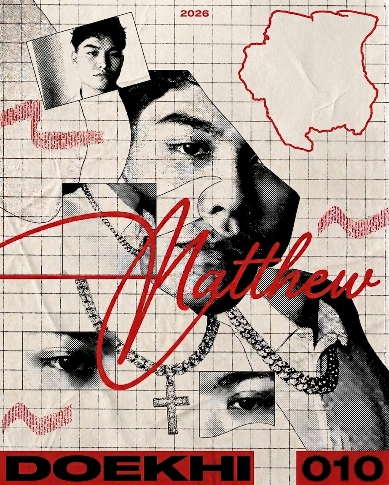

.png)
.png)
 (1).png)
 (2).png)
Design
UX/UI-design, wireframes, prototypes en het ontwerpen van gebruiksvriendelijke interfaces.

001 — Over mij
Welkom op mijn persoonlijke blog. Hier deel ik mijn ervaringen als CMD-student, mijn projecten, nieuwe vaardigheden die ik leer en alles wat mij inspireert binnen design en technologie.
002 — Onderwerpen
UX/UI-design, wireframes, prototypes en het ontwerpen van gebruiksvriendelijke interfaces.
HTML, CSS, JavaScript en het bouwen van interactieve websites.
Schoolprojecten, stages, uitdagingen en persoonlijke groei.
003 — Nieuwste blogs
Tijdens deze Weekly Nerd vertelde Kilian Valkhof hoe developers websites simpeler, sneller en toegankelijker kunnen maken door vaker CSS te gebruiken in plaats van JavaScript.
In deze Weekly Nerd vertelde PPK over de geschiedenis van het web, de huidige staat van het web en de toekomst van het web.
In deze Weekly Nerd vertelde Nils Binder over design tools, animaties en page transitions in modern webdesign.
004 — Nu bezig
005 — Tijdlijn
Gestart met de opleiding Communicatie en Multimedia Design.
Stage gelopen als UX/UI designer en gewerkt aan mijn portfolio.
Verder ontwikkelen als UX/UI designer en nieuwe uitdagingen aangaan.
006 — Inspiratie
007 — Over mij